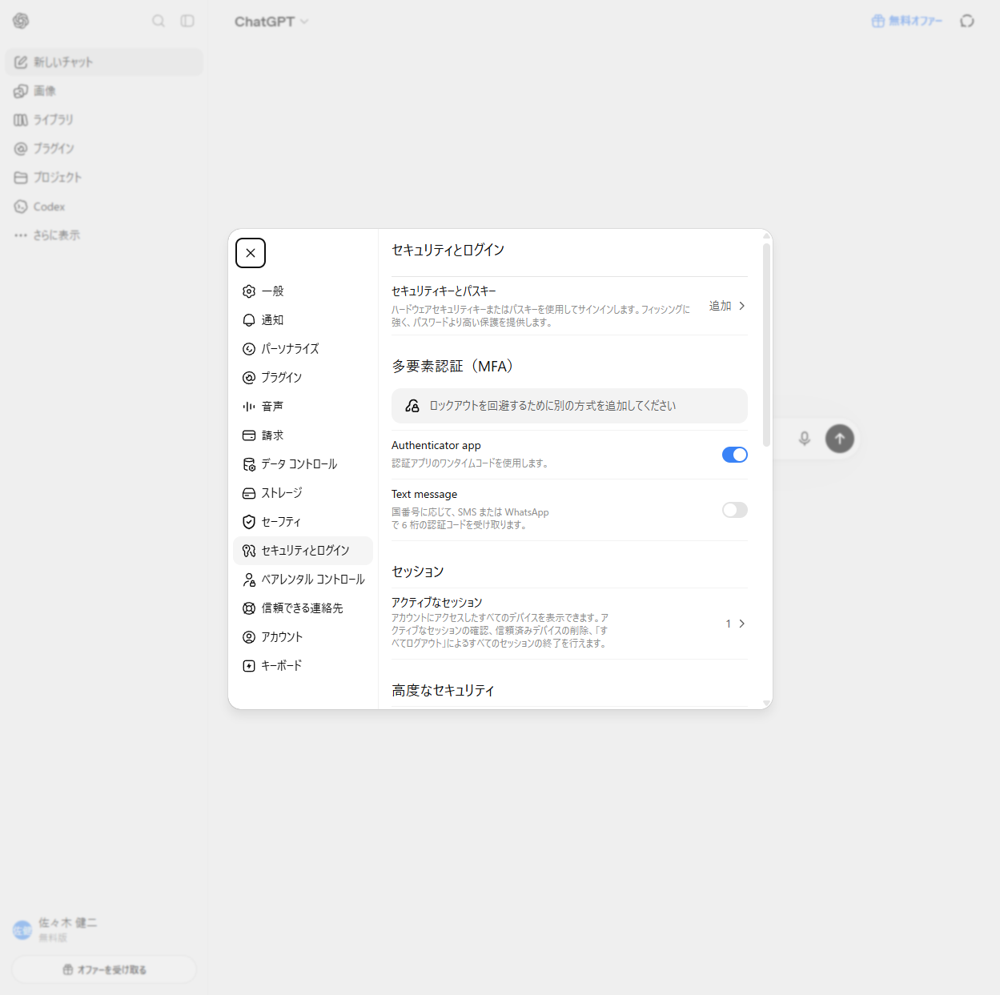

自动完成「注册 ChatGPT 账号」的桌面小工具：自动打开浏览器、填写资料、收取邮箱验证码、绑定双重验证，并把账号信息整理成文件给你。
整个安装只需要双击一个文件，工具会自动完成：创建环境、安装依赖、下载浏览器组件。
打开 input 文件夹，里面有两个文件需要你替换成自己的真实数据（当前是示例样本）：
| 文件 | 怎么填 | 示例 |
|---|---|---|
email.txt | 每行一个邮箱，用 ---- 分成 4 段：邮箱----邮箱密码----client_id----refresh_token | account@example.com----邮箱密码---- |
cards.csv | 每行一张卡，9 列逗号分隔，卡号=16 位卡号、有效期=MMYY、CVC=3 位 | ,4111111111111111,0731,051,... |
cards.example.csv | 填写模板，把内容复制到 cards.csv 再改成你的卡 | — |
address_jp.csv / buildings_jp.csv | 地址与大楼数据库，已内置真实数据，不用改 | — |
----（4 个半角连字符）分隔，不要加空格。注册多个账号时，每个账号应使用不同的出口 IP，避免被 ChatGPT 风控。工具有两种 IP 切换方式：
| 对比项 | 自动模式（推荐） | 手动模式 |
|---|---|---|
| 需要什么 | v2rayN（Xray）+ iKuai 路由器 | Pocket WiFi / 手机热点 |
| 怎么换 IP | 程序自动切换节点 + 自动重拨 ADSL，全程无人值守 | 每完成 1 个账号程序响提示音，你手动重连网络 |
| 适合场景 | 批量注册、批量开通会员、无人值守 | 少量注册、临时使用、没有 iKuai 环境 |
| 配置项 | IP_ROTATION_MODE=ikuai-single（当前默认） | IP_ROTATION_MODE=manual-hotspot |
手动模式下，程序会在每完成 1 个账号后播放提示音并等待，你手动切换 Pocket WiFi / 手机热点重连后，程序检测到 IP 变化即自动继续。
使用自动模式前，需要完成三件事：安装 v2rayN、设置 XRAY_BASE_DIR 路径、配置 iKuai 路由器。以下按顺序说明。
D:\tool\v2rayN-windows-64。bin\xray\xray.exe（Xray 主程序）和 guiConfigs\guiNDB.db（节点数据库）。安装完整版 v2rayN 通常自带这些文件。XRAY_BASE_DIR 是 v2rayN 在你电脑上的安装路径，程序靠它找到 xray.exe 和节点数据库。它写在项目根目录的 .env 文件里：
程序会在 XRAY_BASE_DIR 指向的目录下查找这些文件：
| 文件 | 用途 | 检查方式 |
|---|---|---|
bin\xray\xray.exe | Xray 主程序，负责建立代理通道 | 在资源管理器中确认该文件存在 |
guiConfigs\guiNDB.db | v2rayN 的节点数据库，程序从这里读取节点配置 | 在 v2rayN 里导入过节点后自动生成 |
guiConfigs\<节点名>.json | 备用配置（数据库读取失败时使用） | 一般不需要手动准备 |
iKuai 负责每个账号注册完成后重拨 ADSL 线路，让出口 IP 变化。需要确认以下设置：
IKUAI_API_URL，填 iKuai 的管理地址（如 http://192.168.1.1 或你的域名地址）。IKUAI_USERNAME 和 IKUAI_PASSWORD 填 iKuai 管理后台的登录账号密码。IKUAI_TARGET_WAN_NAME 填要重拨的 ADSL 线路名称（如 adsl3）。这个名字必须与 iKuai 管理后台里显示的外网线路名称一致，否则程序找不到线路。以下是与网络和 IP 切换直接相关的全部配置项，一般由技术人员预设，用户只需重点确认 XRAY_BASE_DIR：
| 配置项 | 含义 | 当前值示例 |
|---|---|---|
IP_ROTATION_MODE | IP 切换模式 | ikuai-single（自动） |
XRAY_BASE_DIR | v2rayN 安装路径（重点确认） | D:\tool\v2rayN-windows-64 |
IKUAI_API_URL | iKuai 路由器管理地址 | http://192.168.1.1 |
IKUAI_USERNAME / IKUAI_PASSWORD | iKuai 管理员账号 / 密码 | admin / **** |
IKUAI_TARGET_WAN_NAME | 要重拨的 ADSL 线路名（须与后台一致） | adsl3 |
PROXY_PORT | 本地代理端口（与 Xray 一致） | 10808 |
菜单长这样（示意图）：
示意图：实际窗口为黑色背景，内容以运行时显示为准。
结果按「两段式」管理，分两个文件，都在 accounts 文件夹里：
accounts_pending.txt（创建账号成功后生成）：每行一个账号，4 段 ---- 分隔：
帐号----密码----2FA----邮箱密码 account@example.com----示例密码----https://2fa.run/2fa/示例TOTP----示例邮箱密码
| 列 | 用途 |
|---|---|
| 帐号 | ChatGPT 登录邮箱 |
| 密码 | ChatGPT 登录密码 |
| 2FA | 浏览器打开这个链接，即可看到当前 6 位动态验证码（登录第二步用） |
| 邮箱密码 | 该 Outlook 邮箱的密码（收验证码用） |
登录 ChatGPT 时：输入邮箱 + 密码，第二步打开 2FA 链接填入动态码即可。
accounts_skipped.txt（连续执行模式下生成）：保存被自动跳过的邮箱原始行。 它不是黑名单；确认邮箱可以再次使用后，把对应行复制回 input/email.txt， 下一批次就会重新执行。每个批次结束还会在 runtime/reports 生成错误报告， 说明每个失败账户的原因和建议处理方式。
以下为真实运行时的「双重验证绑定成功」画面示例：

先运行一次 install.bat 确保环境装好；仍不行请把 logs 文件夹打包发给技术人员。
检查 .env 里的 XRAY_BASE_DIR 是否是你电脑上 v2rayN 的实际路径，并确认该目录下存在 bin\xray\xray.exe。路径中不要有中文或空格。
确认 .env 里的 IKUAI_API_URL、IKUAI_USERNAME、IKUAI_PASSWORD 正确；确认 IKUAI_TARGET_WAN_NAME 与 iKuai 管理后台显示的外网线路名称完全一致（含大小写）。
工具会打开真实浏览器、读取邮箱验证码、启动 xray.exe，部分杀毒软件可能误报。请把项目文件夹加入信任区，或咨询技术人员。
检查网络；检查 input 里的邮箱是否足够、格式是否正确；把窗口里的报错截图发给技术人员。
说明 input 文件夹里的 email.txt / cards.csv 还没替换成真实数据（或文件被删了）。替换后再运行。
确认已切换网络（Pocket WiFi 或手机热点重连），程序每 10 秒自动检测出口 IP，检测到变化后自动继续；长时间不继续请把日志发给技术人员。
runtime、profiles、input、accounts 文件夹，否则账号数据和配置会丢失。TMP 文件夹里的内容即可（不影响任何数据）。
当前版本只使用「CloakBrowser」（现有 Chromium + 持久 profile）。 「Firefox 隐私模式」仍在开发中，batch 启动器的浏览器选择菜单中已标注 「开发中，暂不可选」，请勿选择 Firefox；请一直使用 CloakBrowser。 后续版本完成 Firefox 真实验收后，会在菜单中重新开放该选项。